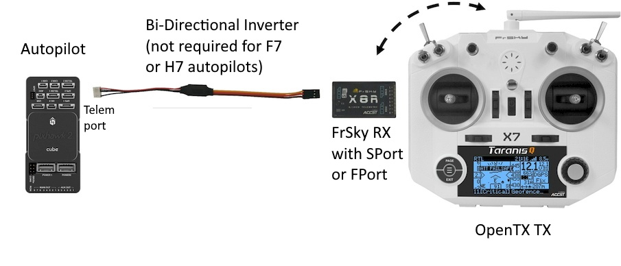

[copywiki destination=”plane,copter,rover,blimp”]¶
Passthrough FrSky Telemetry Protocol¶
Overview¶
Passthrough FrSky Telemetry is the latest protocol available in ArduPilot and it allows the transmission of raw data directly to OpenTX without any preprocessing by OpenTX. The passthrough telemetry protocol is optimized specifically for the FrSky datalink bandwidth and enhancements include having multiple data elements in a single telemetry packet and using floating point representation (e.g. we don’t really need centimeter precision altitude to be displayed on screen when flying at 100m). This results in an improved data refresh rate such that information such as attitude (roll, pitch, yaw) is displayed without any perceptible lag.
Compared to older Repurposed FrSky telemetry, passthrough telemetry contains ArduPilot specific information such as flight modes, error messages, warnings, and failsafes.
ArduPilot’s Passthrough FrSky telemetry protocol is an open protocol that is free to use. Yaapu FrSky Telemetry Script for OpenTX is a free script for OpenTX that will display it on your TX. FlightDeck is an OpenTX paid app for Taranis that uses passthrough telemetry.
This also allows parameter update and certain MAVLink commands to be sent from and OpenTX transmitter to the autopilot. (See Yaapu Bi-Directional Telemetry GCS)
The ArduPilot passthrough telemetry specification including data packets and message rates is available as a spreadsheet.
Required Hardware¶
{kind=link}
Common FrSky Telemetry Setup with OpenTX transmitter running FlightDeck or Yaapu Telemetry Script.
An ArduPilot compatible autopilot. If using an autopilot with an F4 processor, you may need an external bi-directional inverter. See [copywiki destination=”plane,copter,rover,blimp”].
An OpenTX compatible TX.
An FrSky SmartPort receiver
Firmware Configuration¶
Passthrough FrSky Telemetry is enable by setting SERIAL#_PROTOCOL to 10 using your favorite GCS application.
For information on how to configure ArduPilot for FrSky telemetry, please go here.